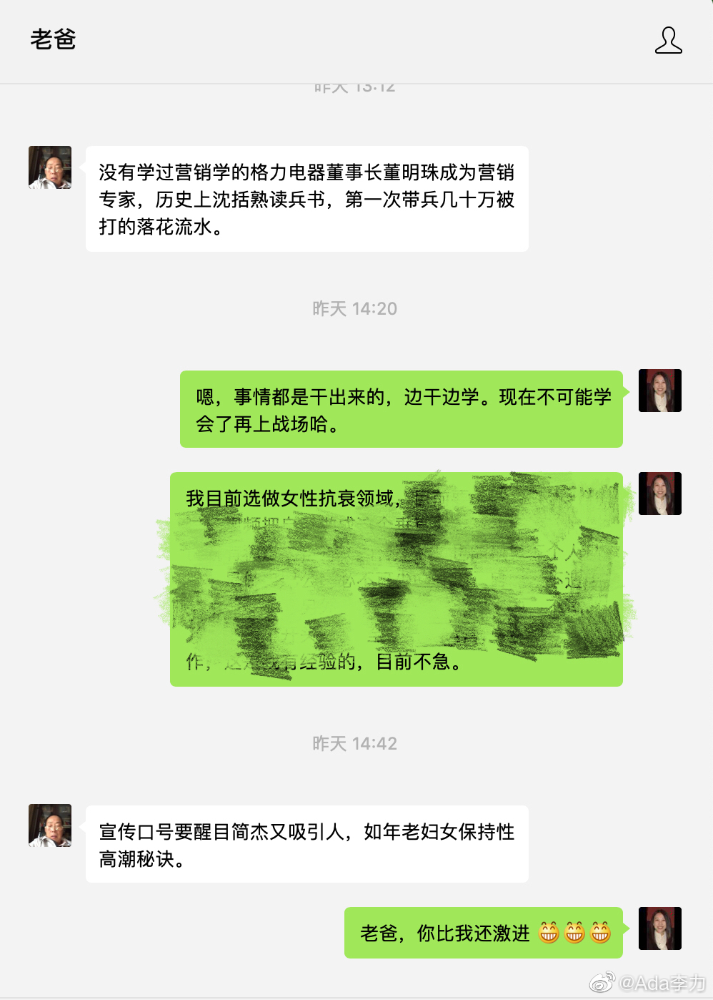

我打着#创业#的旗号，在家懒散了有一年，我老爸远程看得都有些着急，不时还要鞭策我下，或者出谋划策。
说来也奇怪，对我创业最看好也最支持的是我老爹，77岁的人。他还有些遗憾自己生不逢时，现在条件这么好，而且学习资料这么多，人可以干很多事，而他遗憾自己现在体力脑力精力都跟不上了。
记得我妈说60年代闹得最厉害的时候，幸好当时我老爹在部队里当卫生员，不然他准是红卫兵小将里冲在最前面的那个人，如果依照当时那个趋势，他现在会是什么样也很难说。
最近愈发觉得，我老爹蛮硬核的。
说来也奇怪，对我创业最看好也最支持的是我老爹，77岁的人。他还有些遗憾自己生不逢时，现在条件这么好，而且学习资料这么多，人可以干很多事，而他遗憾自己现在体力脑力精力都跟不上了。
记得我妈说60年代闹得最厉害的时候，幸好当时我老爹在部队里当卫生员，不然他准是红卫兵小将里冲在最前面的那个人，如果依照当时那个趋势，他现在会是什么样也很难说。
最近愈发觉得，我老爹蛮硬核的。
- 